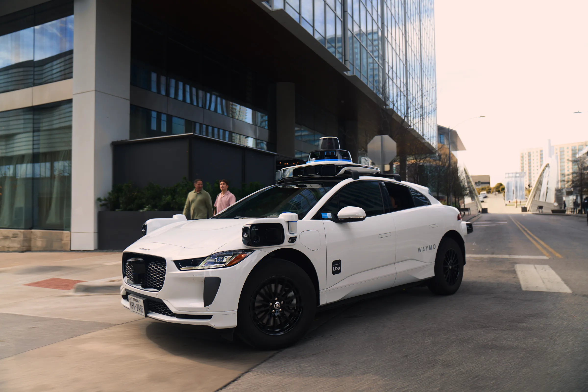
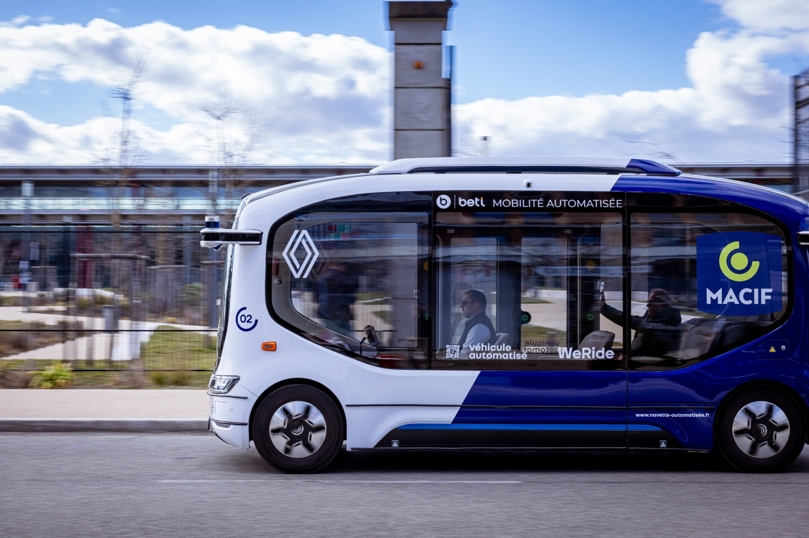

Robotaxi, la course au marché européen
par O. Abdelwahd · Publié le 27 Octobre 2025

Un RoboTaxi Waymo dans les rues d'Austin.
Waymo vient d’annoncer son plan d’importer sa flotte à Londres dès 2026. Acteur majeur du secteur et pionnier du robotaxi, Waymo, déjà implanté commercialement dans plusieurs grandes villes américaines, pourrait bien accélérer l’implantation de ce type de service dans les métropoles européennes.
Au niveau mondial, une vingtaine de villes ont déjà déployé des flottes de robotaxis, principalement en Chine et aux États-Unis. L’Europe, elle, reste encore en retrait : en dehors de quelques flottes expérimentales, aucun service commercial n’a véritablement vu le jour sur le continent. Mais la donne pourrait bientôt changer.
L’entreprise a déjà confirmé que sa phase de test d’adaptation de ses véhicules autonomes aux rues londoniennes débutera dans les semaines à venir. Ces essais se dérouleront avec un « chaperon » à bord : à la manière d’un instructeur de conduite, un humain restera présent à bord pour garantir la sécurité. Waymo souhaite avant tout convaincre les autorités locales de la fiabilité de sa technologie afin d’obtenir les autorisations commerciales nécessaires.
« Nous continuerons à dialoguer avec les responsables locaux et nationaux afin d’obtenir les autorisations nécessaires pour notre service de transport commercial. » indique l’entreprise.
Waymo est déjà déployé commercialement dans cinq villes américaines : Austin, Atlanta, Los Angeles, Phoenix et San Francisco. Mais l’entreprise devra adapter son modèle aux réglementations plus strictes imposées par le législateur britannique, notamment depuis l’adoption du Automated Vehicles Act 2024. Le Royaume-Uni, très proactif dans ce domaine, encourage les tests commerciaux, mais dans un cadre réglementaire rigoureux.
Un marché à deux vitesses
Contrairement aux États-Unis, où le marché atteint désormais une certaine maturité, l’Europe n’en est qu’à la phase de montée en puissance. Plusieurs constructeurs, notamment américains et chinois, cherchent à s’y internationaliser.
Le marché nord-américain et chinois est déjà pleinement opérationnel. On y retrouve de grands acteurs tels que Waymo, Tesla et Cruise aux États-Unis, ou encore Baidu et WeRide en Chine, tandis que l’Europe n’en est encore qu’à la phase de montée en puissance. Ces entreprises étrangères cherchent désormais à s'internationaliser et manifestent un intérêt croissant pour les villes européennes, notamment à travers des partenariats stratégiques avec des acteurs locaux : WeRide collabore avec Renault pour des essais à Valence, tandis qu’Uber et la start-up britannique Wayve testent leurs véhicules autonomes à Londres. En Allemagne, Mobileye et Sixt prévoient également un déploiement à Munich.
L’Europe avance donc plus prudemment, freinée par des normes techniques strictes, des exigences locales propres à chaque municipalité, et des structures urbaines anciennes peu adaptées (rues étroites, piétons nombreux, forte présence cycliste). Ces spécificités rendent plus complexe l’intégration des flottes autonomes à grande échelle, comparée aux vastes avenues américaines ou chinoises.
Pourtant, malgré cette prudence, l’intérêt croissant pour les projets internationaux comme locaux confirme que l’Europe deviendra un terrain majeur du marché des robotaxis.
Et la France dans tout ça ?

En France, il n’existe pas encore de service de robotaxi commercial accessible au grand public, mais plusieurs expérimentations sont en cours. Les start-ups françaises Navya et EasyMile testent depuis plusieurs années des navettes autonomes dans des environnements urbains et semi-fermés (zones industrielles, campus, aéroports, etc.).
Plus récemment, la société WeRide, en partenariat avec Renault Group et la Macif, a lancé une expérimentation à Valence, dans la Drôme, afin d’évaluer la faisabilité d’un service de robotaxis en conditions réelles.
Le cadre réglementaire français, encore en évolution, autorise désormais les essais de véhicules autonomes sans conducteur à bord, mais uniquement dans des périmètres bien définis et sous supervision. L’État privilégie une approche progressive, misant sur la sécurité, la fiabilité et l’acceptation du public avant d’envisager une ouverture commerciale plus large — probablement à l’horizon 2030.
Ainsi, la France avance avec mesure mais ambition, consolidant son expertise dans la mobilité autonome grâce à ses ingénieurs, ses constructeurs automobiles et ses start-ups spécialisées.